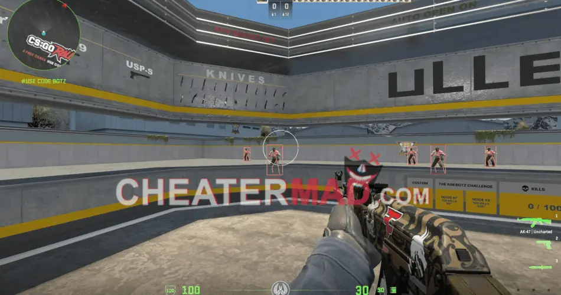
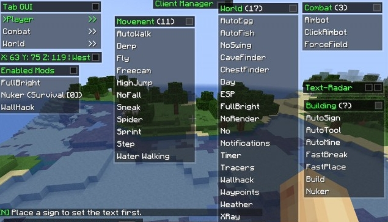
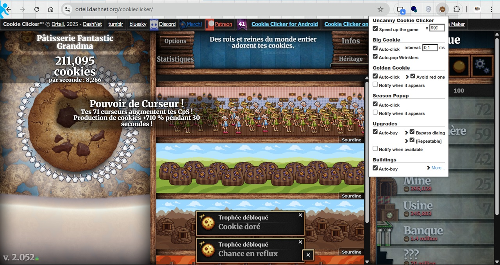

Extra Sensorial Perception

L'ESP ou Extra Sensorial Perception est un cheat utilisé pour connaitre la position des ennemis (dans les jeux de tir à la première personne la plupart du temps) en modifiant leur texture (pour empêcher un camouflage) ou en affichant une boite autour de l'ennemi visible à travers les murs. Ce cheat récupère depuis le serveur la position des ennemis et l'affiche côté client sur l'écran du tricheur. Il est aussi souvent appelé wallhack. C'est un logiciel très utile dans des jeux où l'information sur la position des adversaires est très utilse (comme CS:GO) et si il est bien utilisé, est compliqué à repérer.
AIMBOT

L'AIMBOT, très souvent utilisé dans les jeux de tir à la première personne compétitifs, comme CS:GO ou Call of duty Warzone, est un logiciel de triche qui sert à placer son curseur automatiquement sur la tête de l'ennemi (en général pour le tuer en un coup, sans avoir à bouger sa souris). C'est un logiciel très puissant, et, s'il est bien utilisé, peut être difficile à détecter.
RECOIL CONTROL
Le RECOIL CONTROL est éalement très utilisé dans les jeux de tir à la première personne (surtout dans CS:GO, connu pour la difficulté du contrôle des armes) qui sert à bouger automatiquement son viseur pour que les balles partent toujours au même endroit. En général, dans les jeux vidéos, si on tire plus d'une balle dans un intervalle de temps réduit, les prochaines balles vont partir un peu "n'importe où". Sauf que dans la plupart des jeux, ces balles ne partent pas n'importe où ! Dans CS:GO par exemple, il y a des patterns à connaitre et à maitriser pour que les balles aillent toutes au même endroit. C'est comme ça que ce logiciel de triche peut réussir à contrer les recul des armes, en bougeant le curseur du joueur dans un mouvement opposé au pattern du recul de l'arme. C'est un cheat assez puissant et très difficile à détecter, surtout à haut niveau, où tout le monde commence à très bien maitriser le recul des armes.
SPEED HACK
Le SPEED HACK, comme son nom l'indique, est un cheat qui sert au tricheur à accélérer certaines actions, comme par exemple la pousse des cultures dans farming simulator, ou le temps de rechargement dans les jeux de tir, mais il peut aussi accélérer la vitesse de marche du personnage, ce qui peut être un avantage énorme.. Dans les jeux solo en général on ne blamera personne (si les gens veulent tricher, qu'ils trichent) mais dans les jeux en ligne, plus le logiciel donne des avantages au joueur, plus il est facilement détectable.
FLY HACK

Le FLY HACK, comme son nom l'indique, a été popularisé grâce au jeu Minecraft. On a souvent vu des joueurs voler dans les airs pour aller plus vite d'un point A à un point B ou tout simplement pour construire plus facilement. C'est un cheat très facilement détectable, mais il peut aussi être très utile.
AUTOCLICKER

L'AUTOCLICKER est un cheat qui sert à automatiser une click redondant, comme par exemple cliquer un certain nombre de fois sur un objet pour gagner telle ou telle récompense. C'est de l'automatisation pure, et très peu utilisée en jeux multijoueurs. Ce cheat n'est pas forcément facile à détecter. Quand il est utilisé dans les jeux multijoueurs, il sert la plupart du temps à accélérer la vitesse de ses clics pour taper plus vite.
FARMBOT
Le FARMBOT est un logiciel très avancé conçu principalement pour farming simulator ou des jeux semblables, et sert à automatiser un grand nombre d'actions (comme la plante ou la récolte de cultures). Il n'est pas facilement détectable.